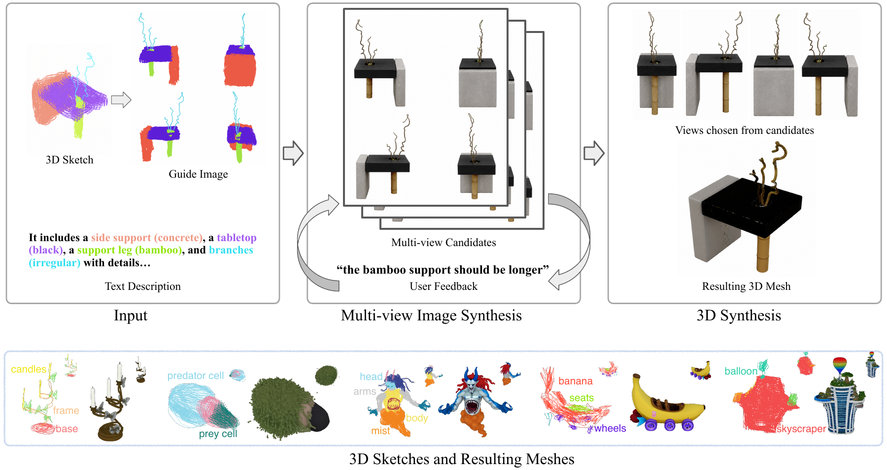

HandMadeSpatial Prompting for Generative 3D Creation
with Part-Labeled VR Sketches
1George Mason University 2University of Chicago 3Reichman University
Preprint, 2026
Abstract
Text-to-3D generation lowers the barrier to 3D content creation, but text alone offers limited control over spatial relationships and structures. In contrast, using your hands to model 3D objects has been shown to be simple and intuitive, but lacks the ability to be precise and detailed. We present HandMade, an authoring system combining rough, part-labeled VR sketches with text for open-domain generation. Users create and describe a 3D sketch. HandMade converts it into multiview image guidance for 3D textured mesh synthesis. Empirical evaluations found closer sketch alignment on average than text-only and 2D sketch baselines. Users rated VR drawing higher than 2D for expressing structure and part relationships and preferred it for similar future tasks. Our findings highlight rough 3D sketches as usable generative guidance and intermediate views as checkpoints for selective revision and reuse.
Pipeline
